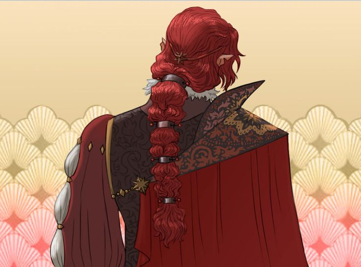
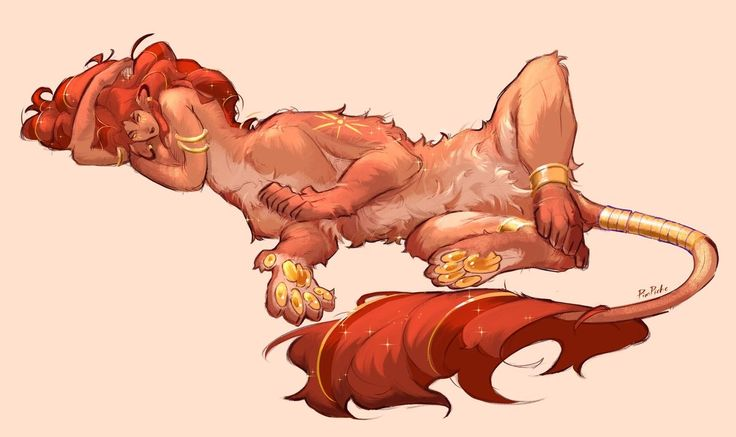
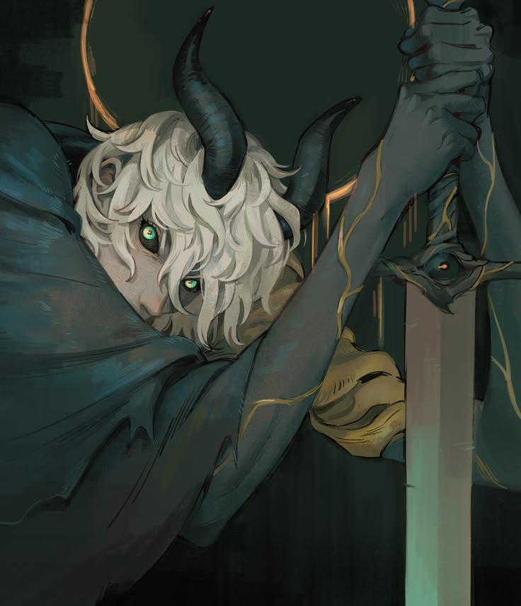
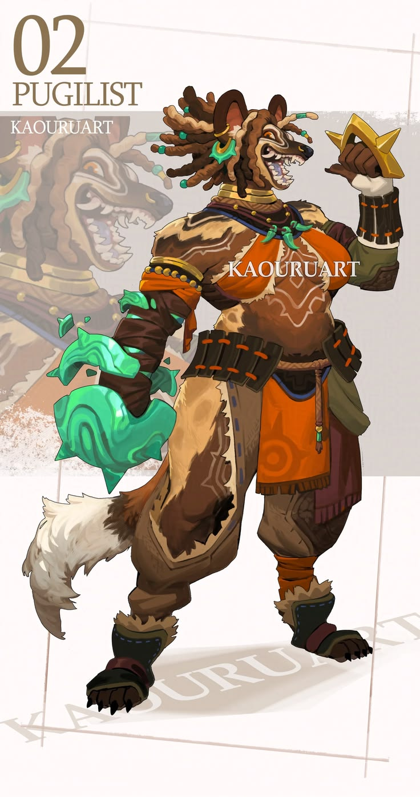
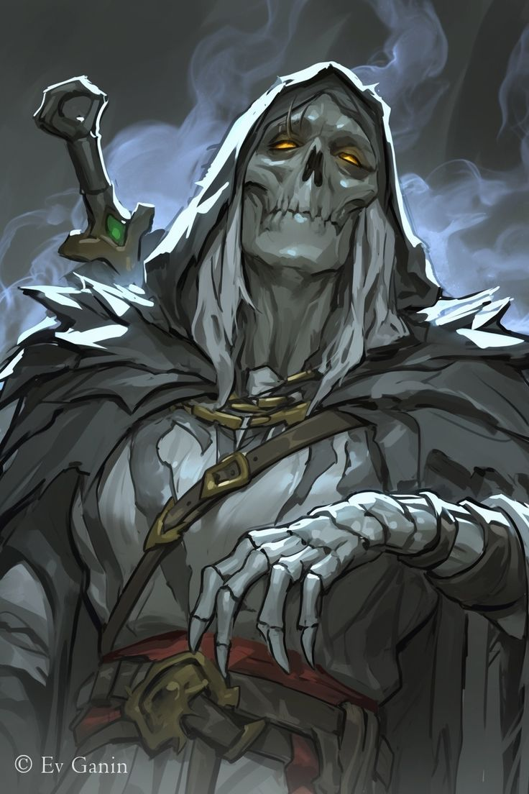

Fundados no 67° ano Polariano, poucos anos após a constituição do Reino da Chama Eterna, os Caçadores das Quatro Bestas existem para proteger a linha de contato com a Floresta Ardente e as Ilhas da Asa Perdida. O corpo de Blae tornou-se abrigo e fonte de criaturas, e alguém precisava impedir que as duas dimensões se encontrassem.
✦ as quatro alas da ordem
As Quatro Bestas
ALA DO DRAGÃO · OESTE
Dragão Azul
ALA DO TIGRE · LESTE
Tigre Branco
ALA DO PÁSSARO · NORTE
Pássaro Vermelho
ALA DA TARTARUGA · SUL
Tartaruga Negra
✦ O CENTRO · TERRA
Na tradição, a Pérola do Dragão Amarelo ocupa o centro e mantém o equilíbrio entre os quatro pontos. Os caçadores adotaram esse lugar: o equilíbiro, a que caça as outras para que o mundo não se parta. A cada estação, os caçadores se revezam entre as alas.
✦ princípios
O Código do Caçador
- Nenhuma besta atravessa a linha. Nem viva, nem morta.
- Caça-se por necessidade, nunca por troféu.
- Quem cai, é carregado. Nenhum caçador fica na floresta.
- O corpo de Blae é sagrado. Respeite-o.
✦ FUNDADOR

✦ caçadores das quatro bestas
Ícaro Velvet
O inaugural da geração Velvet obteve destaque por suas atividades de captura de criaturas que emergiam da floresta, em particular, quando o ladrão de faces decidiu aniquilar uma aldeia de kobolds. Então ele partiu em uma fornada atrás de fera, trazendo sua cabeça espelhada e do seu sangue, marcando onde seria a fundação dos atuais caçadores e expandindo seu compromisso com todo o território.
✦ OS CAÇADORES

✦ caçadores das quatro bestas
Circe Paria
Cresceu na cidade-estado de Yǎnhuà. Ela se alistou para o Exército da Infantaria Vermelha, mas foi realocada com uma proposta de servir aos caçadores. Os cidadãos a descrevem como muito simpática e calma, mesmo ao decorrer das situações perturbadoras ao ter que encarar as criaturas invasoras.

✦ caçadores das quatro bestas
Homer Fallen
O mais jovem dos caçadores, pela sua coragem ao enfrentar uma estirge que sequestrará um garotinho no interior de Xuè. Normalmente, suas rotas acabam não interagindo muito com outros seres, a não ser as próprias criaturas que caça. Traz um olhar muito carregado.

✦ caçadores das quatro bestas
Jade Lazul
Crescida em um vilarejo na península de Gémìng, ela sempre buscou mais. Melhorando seu corpo e habilidades ao extremo para provar que ela poderia ser merecedora de orgulho. Como nem tudo dura para sempre, enquanto cavalgava em direção a Yǎnhuà para se alistar, foi atacada por uma Aranha Cristalario Amarelo, forçando-a a amputar a própria mão.

✦ caçadores das quatro bestas
Shi Sí
Navegando entre as águas do Mar Escaldante que cercam as Ilhas da Asa Perdida, seu corpo não enfrenta desafios mortais como antes. Ele foi o primeiro caçador da Ala da Tartaruga Negra e continuará até o Caronte vir busca-lo.